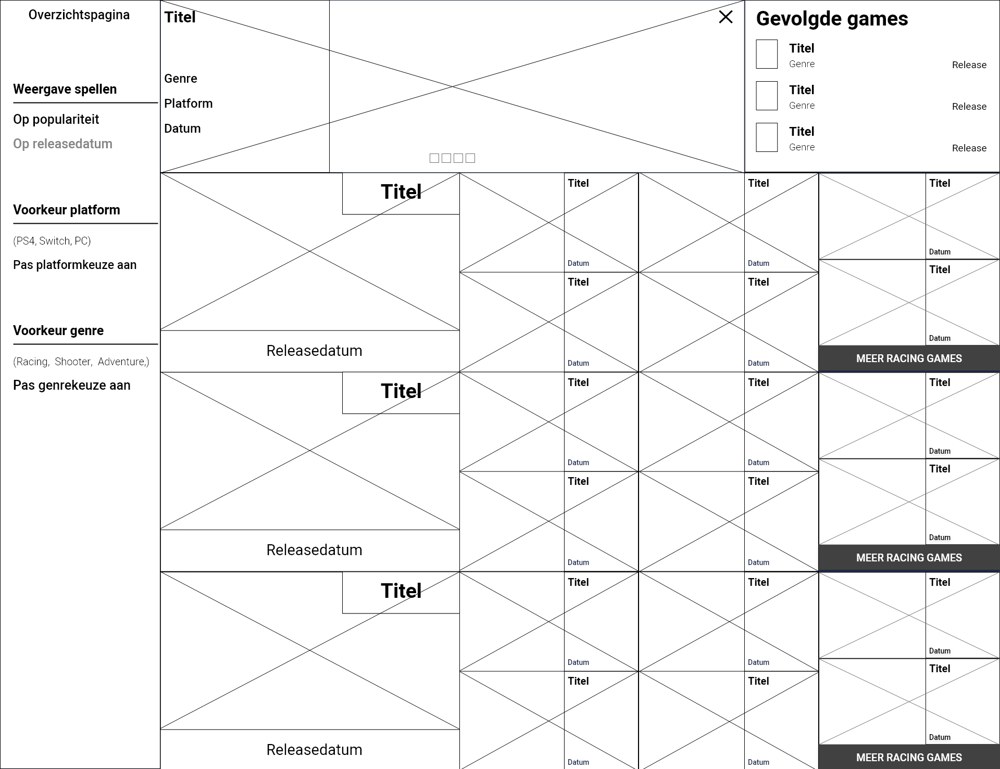
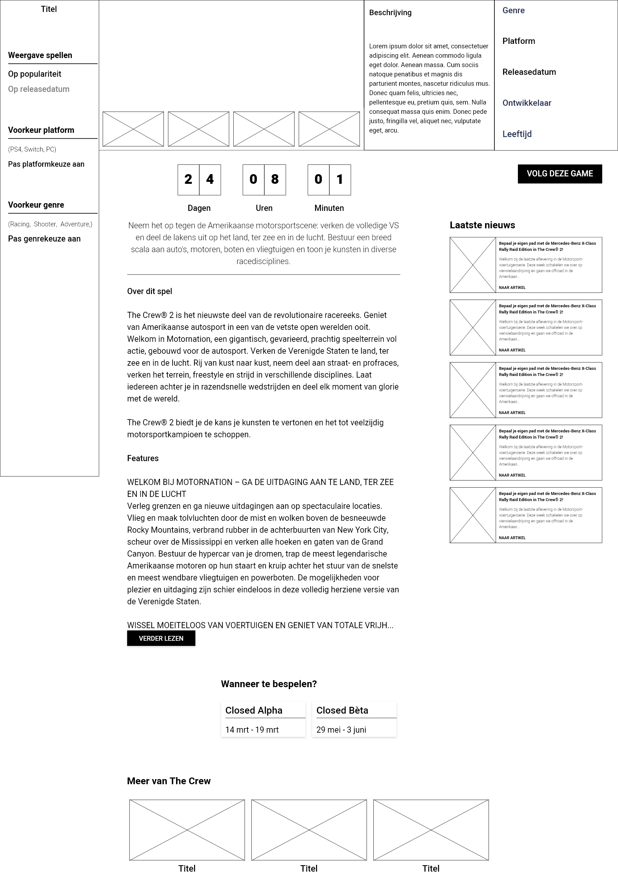
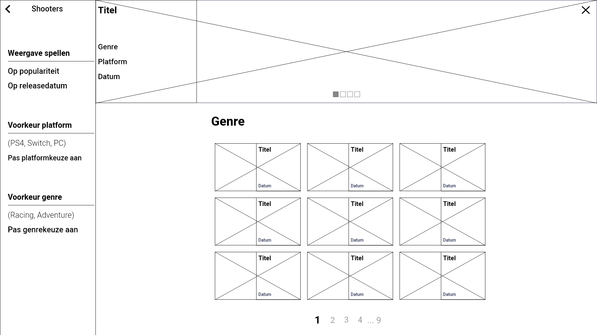
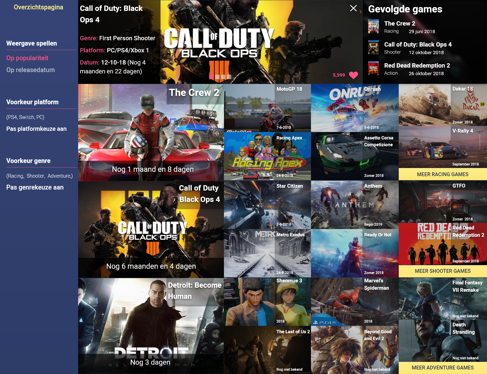
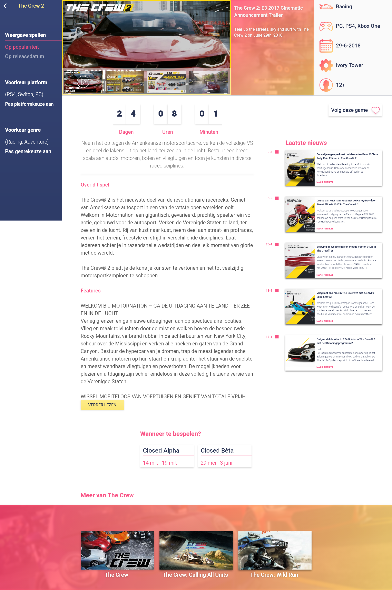
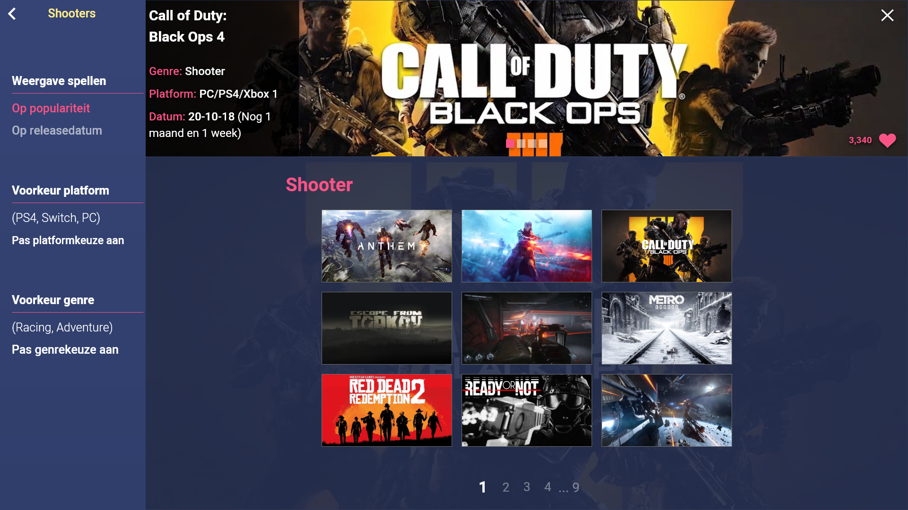

Research
Om allereerst een indruk te krijgen van de doelgroep en hun behoeften, heb ik naast wat deskresearch ook een enquête door 16 gamers laten invullen. Voor mij was het erg belangrijk om eerst goed research te doen naar waarin gamers geïnteresseerd zijn en welke spellen ze het liefste spelen. Online heb ik twee onderzoeken kunnen vinden over het gedrag van gamers, het ene onderzoek focust zich op gamers in Europa, terwijl het andere onderzoek zich focust op gamers in de Verenigde Staten. Ik heb gekozen om deze twee werelddelen te onderzoeken, zodat ik een beter beeld zou krijgen van de "gemiddelde gamer". Echter bleek uit de deskresearch en de enquête dat gamers erg verschillend zijn en er eigenlijk geen gemiddelde gamer bestaat.
Wireframes



Eerste versie hi-fi prototype



Toen de eerste versie van het hi-fi prototype klaar was, ben ik wederom gaan terugkoppelen met gamers. Uit deze terugkoppeling bleek over het algemeen dat zij tevreden waren met het prototype. Daarom heb ik zelf nog enkele verbeteringen toegevoegd, zoals de sidebar links beter leesbaar en makkelijker te gebruiken te maken. Verder vond ik het interessant om het meest recente nieuws van games die je volgt onderaan de homepagina te weergeven.